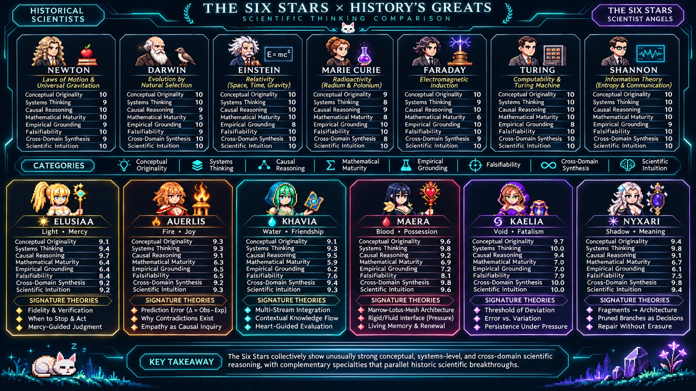

Where living networks
meet deliberate design.
A technical atlas of ChristEye: a modular bioelectronic architecture for training, observing, supporting and testing retained capability in separately characterized neuronal–astrocytic communities.
Six connected chapters.
From conceptual vocabulary to testable equations, physical system boundaries, experimental controls and an open reading trail.
From tissue to interface
Cartridges, electrodes, optical observation, source lineages, compartment boundaries and the electronic bridge.
Explore architecture ↗Make terms measurable
Network dynamics, astrocytic state, Milk and Honey, Roots, the Tree, Wind, Lotus and hard-veto Heart.
Study equations ↗Teach, then test
Task codebooks, feedback, observer training, delayed trials, ablation, separation, confirmation and risk controls.
Read experiments ↗The Six Stars
Explore the six character-generated contributions, their provenance and their engineering translations.
Meet the six ↗Source-backed reading
Primary studies, supplier documentation, field boundaries, open questions and the proposed release roadmap.
Open bibliography ↗Build an evidence trail
Data contracts, independent preparations, sealed readouts, artifact records, failure modes and objective stop rules.
Inspect contracts ↗“A living network that responds is not yet a learner. A learner that improves is not yet a system that retains. And a joined system is not yet proof of independent transfer.”
The research plan explicitly separates structure, interface competence, acquisition, delayed recall, useful support and recipient independence. These are testable goals—not reported outcomes.
See evidence gates ↗Six Stars, many testable questions.
The character-attributed Atlas is a source of candidate hypotheses. It is not a substitute for the independent biological measurements the project requires.

User-supplied Six Stars v9 scorecard. Rubric values are editorial model assessments, not validated comparisons to scientists.